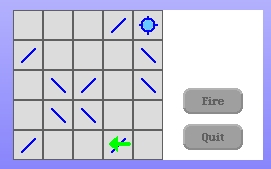
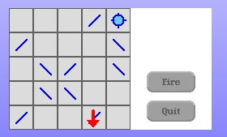
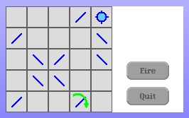

All we have left to do now is use this permission check message when we want to draw the hint arrow. The MirrorCellRenderer class is currently the only one that draws the arrows so we modify its #showPositionHintFromWithinBoardOffset: instance method as follows.
showPositionHintFromWithinBoardOffset: aPoint
| cellPosn offsetWithinCell regionClass arrow offset arrowAndOffset permissionToActOnCell arrowColor |
cellPosn := self offsetWithinGridForm.
offsetWithinCell := aPoint - cellPosn.
regionClass := CellClickRegion clickRegionForPoint: offsetWithinCell.
arrowAndOffset := regionClass scaledHintArrowAndOffsetFromWithinCell: offsetWithinCell.
arrowAndOffset isNil ifTrue: [^self].
permissionToActOnCell := regionClass canActOnCellAtPoint: offsetWithinCell cell: self cell withinGrid: self grid.
arrowColor := permissionToActOnCell
ifTrue: [LaserGameColors allowActionArrowColor]
ifFalse: [LaserGameColors denyActionArrowColor].
arrow := arrowAndOffset value.
offset := arrowAndOffset key.
offset := self offsetWithinGridForm + offset.
arrow
displayOn: self targetForm
at: offset
clippingBox: self targetForm computeBoundingBox
rule: Form oldPaint
fillColor: arrowColor.
The change is that we now check for permission and set the arrow color to agree with whatever response we got.
Let's see how it works.
 The hint arrows are now in color and they show the correct colors (although a little too brightly I think) depending on whether the action is permitted or not.
And of course, the rotation hints are the correct color too.